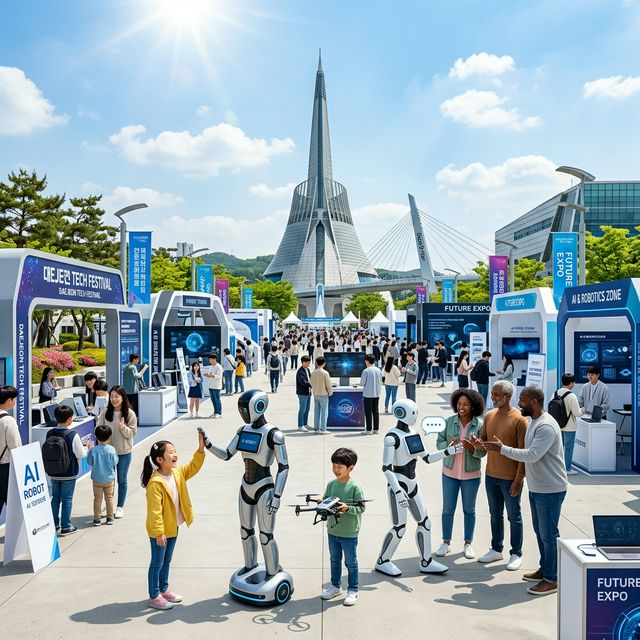
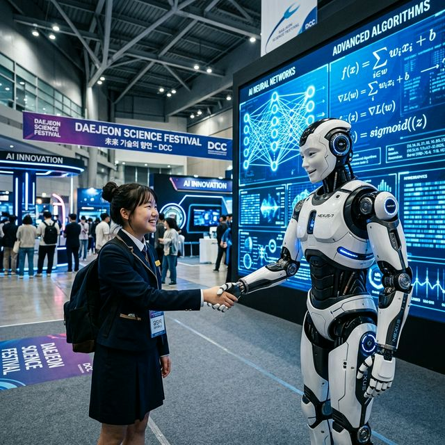
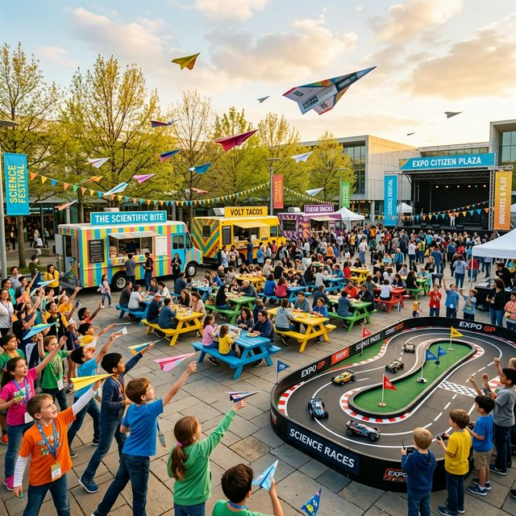

대전 사이언스페스티벌 2026 로봇 AI 체험 과학 도시 대전에서 만나는 미래의 어제와 오늘
인간의 상상력이 인공지능과 만날 때, 미래는 현실이 됩니다! 2026년 4월, 대한민국 과학의 수도 대전이 거대한 '미래 도시'로 탈바꿈했습니다. 올해로 더욱 강력해진
'대전 사이언스페스티벌'은 AI와 로봇 기술이 우리 삶에 어떻게 녹아드는지를 직접 체감할 수 있는 국내 최대의 과학 문화 축제인데요. 엑스포 과학공원을 중심으로 펼쳐지는 압도적인 스케일의 전시와 공연,
그리고 석학들의 통찰력 있는 강연까지! 아이들의 꿈과 어른들의 호기심을 동시에 충족시킬 현장 리포트를 시작합니다.
1. 2026 대전 사이언스페스티벌 일정 및 주요 행사장 안내
대한민국의 과학 기술력을 한눈에 확인할 수 있는 '2026 대전 사이언스페스티벌'은 2026년 4월 17일(금)부터 4월 19일(일)까지 3일간 대전 엑스포과학공원
일원에서 개최됩니다. 올해의 메인 테마는 "인간과 AI가 공존하는 미래도시"로 정해졌으며, 대전컨벤션센터(DCC) 제2전시장을 비롯하여 엑스포다리, 한밭수목원, 시민광장 등 6개 주요 거점을 하나의
동선으로 연결하는 체류형 축제로 기획되었습니다.
행사 시간은 매일 오전 10시부터 저녁 9시까지 운영되어, 낮에는 심도 있는 과학 체험을 즐기고 밤에는 화려한 빛과 드론이 어우러진 멀티미디어 쇼를 감상할 수 있습니다. 특히 대형 전시관이 밀집한
DCC 제2전시장은 실내 공간의 쾌적함 덕분에 가족 단위 관람객들에게 인기가 높으며, 야외의 엑스포과학공원 구역은 축제의 개방감을 마음껏 누릴 수 있는 다양한 참여형 부스들로 가득 차 있습니다.

한빛탑을 배경으로 펼쳐진 대전 사이언스페스티벌의 활기찬 현장 — AI 제작 이미지
2. 오프닝 하이라이트: 이은결 일루셔니스트와 AI의 마술 협연
축제의 시작을 알렸던 개막식은 그 자체로 거대한 과학 기술의 시연장이었습니다. 세계적인 일루셔니스트 이은결의 AI 기반 마술 공연은 관객들을 순식간에 미래의 시공간으로
이동시켰는데요. 실제 마술사의 동작을 실시간으로 학습한 생성형 AI 캐릭터가 홀로그램으로 나타나 함께 호흡을 맞추는 광경은 예술과 기술의 경계가 무너지는 극적인 순간을 선사했습니다.
단순히 시각적인 화려함을 넘어, AI가 예술적 창의성의 도구로 어떻게 활용될 수 있는지를 상징적으로 보여준 이 오프닝 공연은 축제 내내 회자되는 최고의 명장면으로 꼽힙니다. 공연 후 이어진 대규모 드론
라이팅 쇼 역시 2026년 대전의 위상을 증명하듯 수백 대의 드론이 밤하늘에 기하학적인 입체 형상과 과학적 심볼들을 그려내며 지나가는 시민들의 발걸음을 멈추게 했습니다.
3. DCC 제2전시장: 로봇과 인공지능이 제안하는 미래 일상
가장 고밀도의 기술을 체험할 수 있는 곳은 DCC 제2전시장에 마련된 'AI 스테이션'입니다. 이곳에서는 인공지능(AI)이 인간의 언어를 완벽히 이해하고 대화하는 것은
물론, 사용자의 감정 상태를 분석하여 그에 맞는 음악을 추천하거나 배경 조명을 바꾸어주는 스마트 홈 시스템을 직접 작동해볼 수 있습니다. 2026년 현재 가장 앞선 알고리즘이 적용된 로봇 팔이
관람객에게 원하는 선물을 뽑아주는 이벤트는 하루 종일 대기 줄이 끊이지 않는 인기 구역입니다.
또한, 휴머노이드 로봇들과의 축구 대결이나 로봇 바리스타가 내려주는 정밀한 드립 커피 시음 등은 로봇 기술이 우리 일상에 얼마나 깊숙이 들어와 있는지를 실감하게 합니다.
VR(가상현실) 기기를 착용하고 우주 정거장을 수리하거나 심해 동굴을 탐험하는 실감형 콘텐츠 체험존은 청소년들에게 우주와 해양 과학에 대한 꿈을 심어주는 교육적인 창구로서의 역할을 톡톡히 하고
있습니다.

DCC 제2전시장에서 로봇과 교감하는 청소년 관람객 — AI 제작 이미지
4. 세계과학문화포럼: 김경일 교수와 궤도가 들려주는 과학 이야기
대전 사이언스페스티벌은 보는 즐거움뿐만 아니라 생각하는 즐거움도 제공합니다. 축제의 일환으로 열리는 '세계과학문화포럼'에는 인지심리학자로 유명한 김경일 교수와 최고의
인기를 구가하는 과학 유튜버 '궤도'가 강연자로 참여했습니다. 이들은 "인간의 지능은 AI와 어떻게 다른가"라는 원초적인 질문부터 "과학을 알면 세상이 어떻게 더 맛있어지는가"에 이르기까지, 어렵고
딱딱한 이론을 대중의 언어로 쉽고 재미있게 풀어내어 관객들의 환호를 받았습니다.
포럼장에는 각급 학교에서 단체로 방문한 학생들부터 백발의 노학자들까지 다양한 계층이 모여 열띤 토론을 벌이는 진풍경이 연출되었습니다. 전문가들의 강연 후 이어진 질의응답 시간에는 AI 시대를 살아갈
청소년들이 가져야 할 태도와 윤리에 대한 심도 있는 대화가 오가며, 이 축제가 단순히 기술을 과시하는 자리가 아니라 인간의 가치를 고민하는 성숙한 문화의 장임을 확인시켜 주었습니다.
5. 야외 시민 참여형 챌린지: RC카 레이싱과 종이비행기 대결
정적인 전시 관람에 지쳤다면 엑스포 시민광장에서 펼쳐지는 다이내믹한 챌린지에 도전해 보세요. 가장 인기가 높은 'RC카 전력 레이싱'은 직접 조립하거나 튜닝한 무선 조종
자동차로 전용 트랙을 돌며 스피드를 겨루는 경기입니다. 단순히 조종 실력뿐만 아니라 공기 역학적 설계와 배터리 효율 관리 등 엔지니어링적 지식이 승패를 가르는 요소로 작용하여 성인 마니아층의 참여도
뜨겁습니다.
아이들에게는 '국가대표와 함께하는 종이비행기 챌린지'가 단연 최고입니다. 멀리 날리기, 오래 날리기 등 종이 한 장에 숨겨진 항공 역학의 원리를 배우고 직접 실습해보는
과정은 아이들에게 가장 창의적인 놀이로 다가옵니다. 챌린지에 성공하고 받은 배지는 이번 축제 방문을 기념하는 소중한 훈장이 됩니다. 야외 행사장 한편에서 열리는 '흑백 과학자 퀴즈쇼' 역시 서바이벌
방식으로 진행되어 지나가는 시민들의 발길을 붙잡는 흥미로운 관전 포인트입니다.

아이들의 꿈을 실어 나르는 종이비행기 챌린지와 활기찬 야외 행사장 — AI 제작 이미지
6. 한밭수목원과 엑스포다리: 자연과 기술이 만나는 힐링 산책
축제의 동선은 회색빛 전시관을 넘어 푸른 녹지의 한밭수목원으로 이어집니다. 수목원 곳곳에는 증강현실(AR) 기술을 활용한 식물 도감이 설치되어 있어, 스마트폰 카메라로
꽃이나 나무를 비추면 해당 식물의 이름과 생태 특성이 입체적으로 나타납니다. 기술이 자연을 훼손하는 것이 아니라 자연에 대한 이해를 돕는 도구로 기능하는 인상적인 사례입니다. 숲속에서 열리는 '가든
음악회'는 기계적인 소음에 지친 귀를 정화해주는 따뜻한 위로의 시간을 선사합니다.
두 행사장을 잇는 엑스포다리(견우직녀다리)는 밤이 되면 화려한 야경 성지로 변신합니다. 다리 난간을 따라 설치된 인터랙티브 LED 조명은 관람객의 발걸음에 맞춰 색깔이
변하거나 파동을 일으키며 걷는 재미를 더해줍니다. 사이언스페스티벌 기간에는 갑천 수변을 따라 푸드트럭들이 일렬로 배치되어, 강바람을 맞으며 맛있는 음식을 즐기는 '과학 나들이'의 낭만을 완성합니다.
7. 교통 및 주차 안내: 과학 도시 대전을 무사히 탐험하는 방법
전국적인 인파가 몰리는 만큼 교통과 주차 전략은 필수입니다. 엑스포과학공원 뒤편 주차장과 DCC 지하 주차장은 주말 오전에 이미 만차될 확률이 99%입니다. 따라서
대전시는 축제 기간 대전역과 행사장, 그리고 주요 환승 거점을 잇는 셔틀버스를 증편하여 운영하고 있습니다. 외지에서 기차를 타고 오시는 분들이라면 대전역에서 바로 셔틀을 타거나 시내버스를 이용하는 것이
시간을 아끼는 가장 현명한 방법입니다.
자차 이용객들을 위한 한 가지 팁은 행사장에서 도보 15분 거리인 한밭수목원 북원 주차장이나 예술의 전당 주차장을 공략하는 것입니다. 상대적으로 여유가 있으며 수목원을
관통해 행사장으로 들어오는 동선 자체가 매우 아름답기 때문입니다. 주말 한정으로 인근 관공서 주차장도 개방되니, 방문 전 대전 사이언스페스티벌 공식 홈페이지의 '실시간 주차 현황' 메뉴를 수시로
체크하여 헛걸음하지 않도록 주의하시기 바랍니다.
8. 관람 에티켓과 안전 관리: 즐거운 과학 나들이의 매너
다양한 전자 장비와 고가의 로봇이 노출된 축제인 만큼 관람객의 안전과 매너가 무엇보다 중요합니다. 전시된 로봇들은 정교한 센서로 작동하므로 임의로 손을 대거나 흔들면
고장의 원인이 될 수 있습니다. 체험 공간에서는 반드시 운영 요원의 안내를 따르고, 어린아이들이 장비 안쪽으로 들어가지 않도록 부모님들의 세심한 지도가 필요합니다. 실내 전시실에서는 가급적 뛰지 않고
조용히 관람하여 다른 사람들의 집중을 방해하지 않는 성숙한 시민 의식이 필요합니다.
또한, 대량의 인파가 모이는 야외 공연장과 다리 위에서는 우측통행과 질서 있는 이동이 필수입니다. 특히 유모차와 웨건 이용객이 많으므로 휠체어 이용자를 위한 경사로를
비워두는 배려가 필요합니다. 행사장 곳곳에 배치된 '과학 안전 보안관'들은 관람객들의 불편 사항을 해결하고 비상 상황 발생 시 즉각 대응하고 있으니, 도움이 필요할 때는 주저하지 말고 요청하시기
바랍니다. 스스로 지키는 안전 매너가 모여 모두에게 행복한 과학 축제를 만듭니다.
9. 방문 전 체크리스트와 200% 활용 팁
마지막으로 축제를 완벽히 즐기기 위한 준비물 체크리스트를 제안합니다. 첫째, 걷는 양이 상당하므로 '편안한 운동화'는 필수입니다. 둘째, 야외 활동 시 햇볕을 가릴 수
있는 모자와 선글라스를 챙기세요. 셋째, 일부 체험 프로그램은 선착순으로 마감되므로 공식 앱을 통해 '사전 예약' 가능 여부를 미리 확인하고 신청해 두는 센스가 필요합니다. 넷째, 다회용기나 텀블러를
지참하면 푸드트럭이나 카페 이용 시 할인을 받을 수 있는 환경 친화적 이벤트도 마련되어 있습니다.
대전 사이언스페스티벌은 단순히 지식을 습득하는 장소를 넘어, 기술이 어떻게 사람을 향하는지를 직접 체험하는 감동의 현장입니다. 이번 주말, 사랑하는 가족, 친구와 함께
'오늘 만나는 내일'을 경험해 보시는 것은 어떨까요? 인공지능이 기계의 언어가 아닌 인간의 따뜻한 감성과 만나는 곳, 대전에서의 특별한 3일이 여러분을 기다립니다. 지금 바로 대전으로 과학 여행을
떠나보세요!
#대전사이언스페스티벌
#2026대전사이언스페스티벌
#과학도시대전
#엑스포과학공원
#로봇체험축제
#AI미래도시
#가족주말나들이
#한빛탑야경
#어린이과학체험
#대한민국과학축제